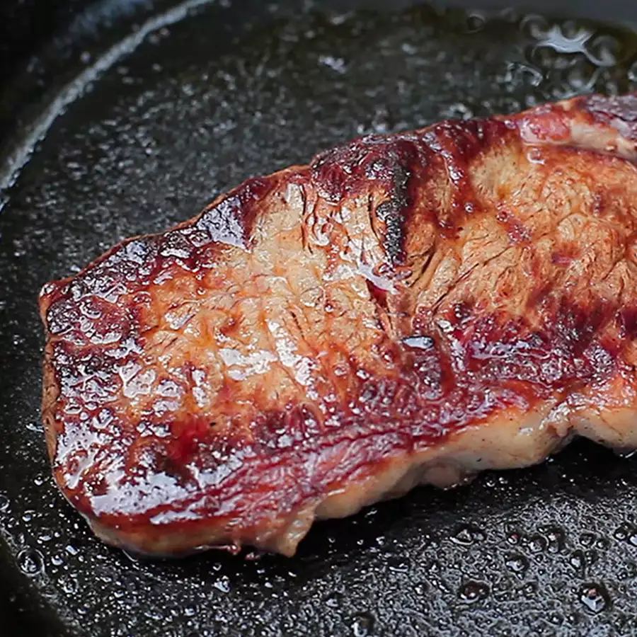

Steak Using the Fast-Flip Method
Back to recipes

Description
This is a flex recipe loved by most of people, if you never tasted it you are just losing it all!
Let's learn a default lasagna recipe below:
Ingredients:
- 1 beef sirloin steak, at room temperature
- salt to taste
- 3 tablespoons high-heat cooking oil, or as needed
Steps:
- Preheat a heavy cast iron skillet over medium-high heat. Pat steak dry with paper towels on both sides. Season generously with salt on both sides.
- Drizzle oil into the hot skillet. Add steak and cook for 30 seconds. Flip steak, cook for 30 seconds, then flip again. Continue flipping and cooking 30 seconds on each side.
- Remove steak from the pan when it has developed a brown crust, is beginning to firm, and is hot and slightly pink in the center, about 3 to 4 minutes of total cooking time for a 1-inch steak. Check for doneness using an instant-read thermometer inserted into the center: 125 degrees F (52 degrees C) for rare; 130 degrees F (54 degrees C) for medium-rare; 145 degrees F (65 degrees C) for medium; or 160 degrees F (70 degrees C) for well-done.
- Cover steak with 2 layers of aluminum foil and allow to rest in a warm area for 5 minutes.
Now, just enjoy it! Bon Apetit